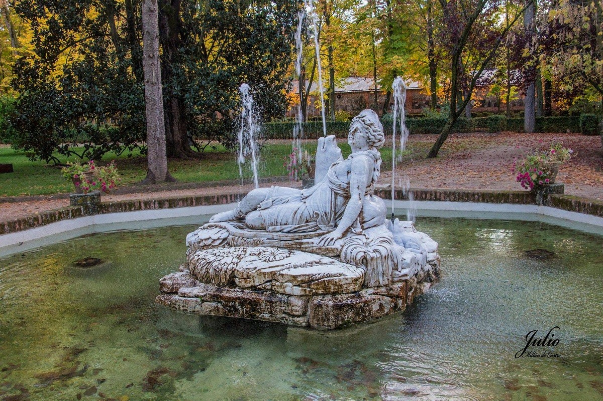

La Fuente de Diana es una de las obras más emblemáticas de los jardines de Aranjuez
La fuente representa a la diosa Diana, diosa romana de la caza, la naturaleza y la luna. La escultura muestra a Diana recostada sobre un lecho de piedras, flores y plantas acuáticas, acariciando a un perro de caza. La diosa está vestida con una túnica ceñida al cuerpo, y su cabello está recogido en un moño.
La Fuente de Diana es una obra maestra del neoclasicismo español. La escultura es de gran belleza y expresividad, y representa a la perfección la figura de la diosa Diana. La fuente es un elemento fundamental del patrimonio histórico y cultural de Aranjuez.
La Fuente de Diana es una obra de arte que merece ser admirada. Su belleza y su simbolismo la convierten en un elemento imprescindible de la visita a Aranjuez.